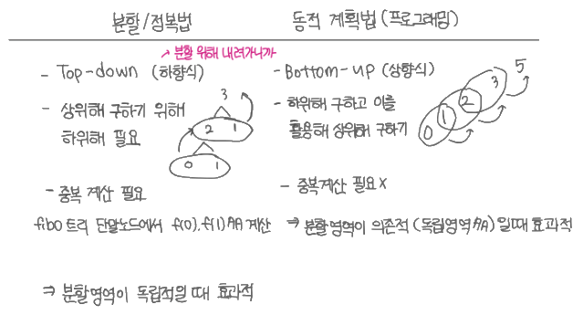

2.2.1
재귀 알고리즘 설계 원리
재귀 알고리즘 설계 원리
- 순환 알고리즘의 구조 (디자인 방식)
| int R(int n) { if ( ) //종료 가능한 조건식 ______________; //종료(시 처리해야 할) 값 else ___________; //순환 호출하는 부분 (순환 패턴) } |
- 분할/정복법 vs 동적 계획법 : 하향식(Top-down)과 상향식(Bottom-up) 비교
